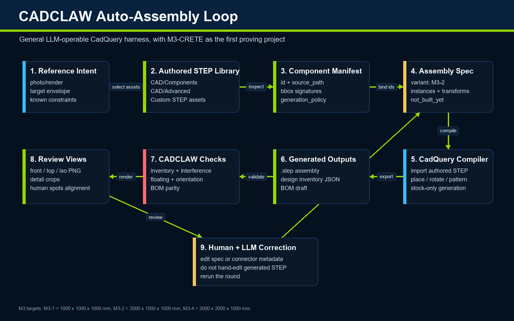

Build STEP assemblies.
Check them automatically.
CADCLAW is a Python package for mechanical assemblies. A declarative spec seats your authored STEP parts on connector frames and datum chains, then compiles the assembly. Automated gates check what it built: interference, adjacency, floating parts, dimensions, tolerance stacking, and BOM-vs-CAD. Run it at your desk, in CI, or from an MCP-compatible assistant.
MIT licensed · pip install cadclaw · Python 3.10+ with CadQuery · no commercial CAD software required for CADCLAW's own checks

Quick start
Install the package, verify the environment, point it at a rule file, and run. The harness returns a process exit code, so a failing gate fails a CI job the same way a failing test does.
pip install cadclaw cadclaw doctor # verify the environment cadclaw harness --rules cadclaw.yaml # run configured checks cadclaw bom-audit --rules cadclaw.yaml # or a single gate
Exit codes: 0 pass · 1 fail · 2 warn-only · 3 internal error.
A minimal cadclaw.yaml
schema_version: "0.9" meta: project: my-project step: build/assembly.step # your authoritative STEP export bom: bom/public_bom.json # your public BOM JSON # Bbox signature to label. Observational, not generative: this says # "a part with this bbox signature is a NEMA23". It does not make one. # A signature is the sorted (dx, dy, dz) tuple rounded to 0.1 mm. labels: cbeam_4080_1m: [40.0, 80.0, 1000.0] nema23: [56.4, 56.4, 76.6] vwheel: [10.2, 23.9, 23.9] expected_inventory: cbeam_4080_1m: 17 nema23: 6 bom_audit: ignore_labels: [other, belt]
Every section is optional. A section you leave out skips its gate and is reported under confidence_budget.not_checked rather than silently passing. Scaffold the labels block from an existing STEP file with examples/init_rules.py. Full how-it-works write-up: CI for mechanical design →
What it checks open source
A chain of gates runs against the exported STEP, the BOM JSON, and your README text. Each finding carries severity, evidence, and a confidence budget rather than a bare pass or fail, because a real part is not binary present-or-absent: it can be slightly the wrong size, slightly clipping, slightly misplaced.
Inventory
Missing or extra parts, by bounding-box signature, against expected counts.
Interference
Solid-solid overlaps via BRep boolean intersection — not just bbox.
Adjacency
Parts that should be near each other but aren't — the motor 600 mm from its mount.
Dimensional
Wrong thickness, swapped box() args, impossible dimensions.
Floating
Non-exempt parts isolated from the structural frame beyond a max gap.
Structural
Beam deflection, motor torque budget, belt tension. Static load math, not motion-clearance or full-travel sweeps.
Tolerance
Worst-case, RSS, Monte Carlo stacking with Cpk and variance decomposition.
BOM audit
BOM JSON ↔ CAD: qty, mfg_type, required/forbidden terms, count drift. Private fields never echoed.
cadclaw doctor inspects the configured environment · cadclaw publish-audit checks configured publication boundaries · cadclaw claim-audit flags selected overclaim patterns. The local MCP server declares 23 assembly, check, analysis, audit, and render tools. It is not a security sandbox: path-taking tools read specified files, six assembly tools can write configured outputs, and the server runs with the local process account's permissions. Use a least-privilege working copy and review tool inputs and outputs.
Assemble, then verify
CADCLAW does two things, and the first one is the reason the second one is useful.
It assembles. An assembly spec declares the parts, where they come from, and how they seat against each other. An instance says place this connector frame against that parent frame, offset along an axis. The resolver walks the datum chain in topological order and solves each transform, reporting cycles, missing references, and missing frames as findings. Absolute transforms still work, so migration is incremental. Parts land by constraint, not by hand-typed coordinates, which is what makes the result reproducible enough to check.
It verifies. The gates above run against the compiled STEP and report what they found. Alongside them it emits a design inventory, a model-derived BOM, review-view renders, and step-by-step build sequences.
What CADCLAW does NOT prove
CADCLAW checks geometry, BOM JSON, and README text against rules you write. It does not prove:
- That the native CAD model has no hidden or suppressed parts — it reads the STEP export, which can silently drop invisible parts.
- That the physical build matches the CAD.
- That a vendor part is in stock or the price you assumed.
- That a printed part is strong enough for production — the structural gate does bare-beam math, not fatigue or creep.
- That an AI-generated change is correct — passing the gates means "passed the gates we have," no more.
Each report ships a confidence budget per gate: checked, not_checked, assumptions. Read it.
Origin
CADCLAW was developed alongside the M3-CRETE open-source concrete 3D printer, a part-dense machine that made the failure modes obvious. Historical development runs motivated the current inventory, interference, adjacency, dimensional, and publication-boundary checks. The repository's versioned tests — not this summary — are the evidence for specific software behavior. CADCLAW does not claim that a finding prevented fabrication cost, that a passing run validates a physical machine, or that historical observations generalize to every assembly.
M3-CRETE is the project CADCLAW was first deployed against and serves as a published case study. It is not the boundary of CADCLAW's scope: the tool applies to anyone driving hardware from a CAD repository, from robotics chassis to fixtures, optical mounts, and prosumer 3D printers. Developed by Sunnyday Technologies.
MARB uses CADCLAW as its grader
The Mechanical Assembly Readiness Benchmark is a separate project. It grades how AI workflows assemble a multi-part machine in CAD, and it imports CADCLAW's gates as its automated grader. That is what makes its scores checkable: the grader is MIT licensed and published on PyPI, so anyone can install it and re-run a result rather than take a published number on faith. The benchmark, its versioned method, and every published score live at marb.cadclaw.io.
Citation
If you use CADCLAW in published research or derivative work, please cite:
Sonnentag, N. (2026). CADCLAW: Automated validation framework for STEP-based CAD assemblies. Sunnyday Technologies. https://github.com/sunnyday-technologies/CADCLAW DOI: 10.5281/zenodo.19647390
10.5281/zenodo.19647390 is the Zenodo concept DOI (all versions). It always resolves to the latest deposited release. Cite a specific release only when you need to pin one, and label it as a version DOI when you do.
A CITATION.cff file is included for automated citation tooling.

Sunnyday Full Loop
Connected 3DCP Stack
This is a portfolio map, not a claim of automated integration, certification, a shared production dataset, or end-to-end validation. Each linked project states its own evidence and readiness boundaries.